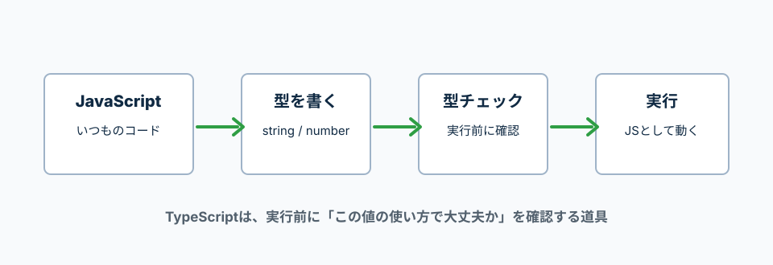

TypeScriptは、JavaScriptに型チェックを足すもの。
TypeScript公式ハンドブックでは、TypeScriptはJavaScriptプログラムの静的型チェッカーとして説明されている。
静的というのは、コードを実行する前に確認するという意味。
TypeScriptは、書いたコードを実行する前に型の間違いを確認する。
ブラウザで動く時は、最終的にはJavaScriptとして実行される。

コロンの後ろに型を書く。
この例では、nameは文字列、ageは数値、isAdminはtrue/falseだけ入る。
const name: string = '太郎';
const age: number = 20;
const isAdmin: boolean = false;
console.log(name);
console.log(age);
console.log(isAdmin);
: string
この変数には文字列が入る、という意味。
: number
この変数には数値が入る、という意味。
: boolean
この変数にはtrueかfalseが入る、という意味。
TypeScriptは、右側の値を見て型を推測できる。
何でも毎回型を書く必要はない。
const title = 'Todo';
const count = 3;
const isDone = false;
console.log(title);
console.log(count);
console.log(isDone);
const title = 'Todo';
右側が文字列なので、TypeScriptはtitleをstringだと推測する。
型エラーは、どこに何を入れようとして失敗したかを読む。
下の例では、number型のageに文字列を入れようとしている。
let age: number = 20;
age = '二十歳';
age = '二十歳'; の部分。numberにstringを入れている。
tsconfig.jsonは、TypeScriptの型チェックや変換ルールを書く設定ファイル。
まずはstrictをtrueにして、型の間違いに気付きやすくする。
{
"compilerOptions": {
"strict": true,
"jsx": "react-jsx"
}
}
strict
TypeScriptのチェックを厳しめにする設定。
jsx
ReactのJSX/TSXをどう扱うかの設定。